[SelectBox] 선택 항목을 표시하는 방법을 설정하기
1개요
SelectBox의 'displayMode' 속성과 'delimiter' 속성을 사용하여 선택 항목을 표시한 예제입니다.
다음은 예제에서 사용한 속성과 설명입니다.
displayMode : 선택 항목의 표현 방법.
delimeter : 선택 항목 목록에 value와 label을 함께 표시할 때 사용하는 구분자.
2구현된 기능
항목을 'label'로 표시하기
항목을 'value'로 표시하기
항목을 'label 구분자 value' 형식으로 표시하기
항목을 'value 구분자 label' 형식으로 표시하기
3예제 테스트 방법
3.1항목을 'label'로 표시하기
예제 영역 "항목을 'label'로 표시하기"에서 테스트합니다.SelectBox의 선택된 항목이 'Apple'로 표시되어 있습니다.
1
STEP 1: SelectBox를 클릭합니다.
Image 1.브라우저(Chrome) 실행 예시
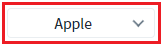
2
STEP 2: 실행 결과를 확인합니다.
목록의 항목이 'label' 값으로 표시됩니다.
표시된 항목은 'Apple', 'Banana', 'Cherry', 'Dragon fruit'입니다.
Image 2.브라우저(Chrome) 실행 예시
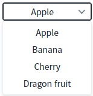
3.2항목을 'value'로 표시하기
예제 영역 "항목을 'value'로 표시하기"에서 테스트합니다.SelectBox의 선택된 항목이 '01'로 표시되어 있습니다.
1
STEP 1: SelectBox를 클릭합니다.
Image 3.브라우저(Chrome) 실행 예시
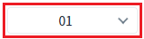
2
STEP 2: 실행 결과를 확인합니다.
목록의 항목이 'value' 값으로 표시됩니다.
표시된 항목은 '01', '02', '03', '04'입니다.
Image 4.브라우저(Chrome) 실행 예시
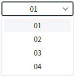
3.3항목을 ' label 구분자 value' 형식으로 표시하기
예제 영역 "항목을 'label 구분자 value' 형식으로 표시하기"에서 테스트합니다.SelectBox의 선택된 항목이 'Apple - 01'로 표시되어 있습니다. 구분자가 ' - '로 설정되었습니다.
1
STEP 1: SelectBox를 클릭합니다.
Image 5.브라우저(Chrome) 실행 예시
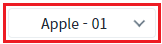
2
STEP 2: 실행 결과를 확인합니다.
목록의 항목이 'label 구분자 value' 형식으로 표시됩니다.
표시된 항목은 'Apple - 01', 'Banana - 02', 'Cherry - 03', 'Dragon fruit - 04'입니다.
Image 6.브라우저(Chrome) 실행 예시
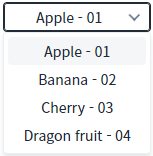
3.4항목을 'value 구분자 label' 형식으로 표시하기
예제 영역 "항목을 'value 구분자 label' 형식으로 표시하기"에서 테스트합니다.SelectBox의 선택된 항목이 '01 - Apple'로 표시되어 있습니다. 구분자가 ' - '로 설정되었습니다.
1
STEP 1: SelectBox를 클릭합니다.
Image 7.브라우저(Chrome) 실행 예시
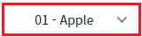
2
STEP 2: 실행 결과를 확인합니다.
목록의 항목이 'value' 값으로 표시됩니다.
표시된 항목은 '01 - Apple', '02 - Banana', '03 - Cherry', '04 - Dragon fruit'입니다.
Image 8.브라우저(Chrome) 실행 예시
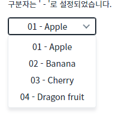
4구현 예시
4.1DataList의 label, value 및 데이터 확인하기
1
STEP 1: Selectbox의 BindItemSet 설정 값 확인하기
디자인 탭에서 SelectBox를 더블 클릭하여 'SelectBox 설정 팝업' 창에서 Label에 'Label', Value에 'Code'가 설정된 것을 확인합니다.
Image 9.웹스퀘어 스튜디오의 '디자인' 탭 - 컴포넌트 선택 예시

Image 10.웹스퀘어 스튜디오의 '디자인' 탭 - Selectbox 설정 창 예시
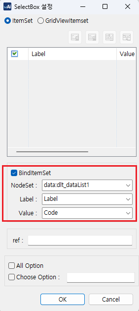
2
STEP 2: DataList의 데이터 확인하기
SelectBox의 목록과 연결된 DataList에 할당된 데이터를 확인합니다.
Image 11.웹스퀘어 스튜디오 - 데이터컬렉션 예시
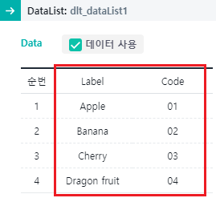
4.2선택 항목 표시하기
1
SelectBox의 속성을 정의합니다.
[필수] displayMode
[default: label, value delim label, label delim value] 선택 항목의 표현 방법. label과 value를 함께 표현하는 것이 가능. 구분자는 delimiter 속성에 정의 된 값을 사용.
[필수] delimiter
선택 항목 목록에 value와 label을 함께 표시할 때 사용하는 구분자.
Image 12.웹스퀘어 스튜디오의 Component View - 속성 설정 예시
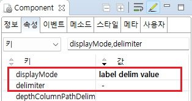
Example 1.Source
<!-- selectBox 의 소스 본문 예시 --> <xf:select1 displayMode="label delim value" delimiter=" - "> <!-- 중략 --> </xf:select1>
5주요 API
displayMode
delimiter